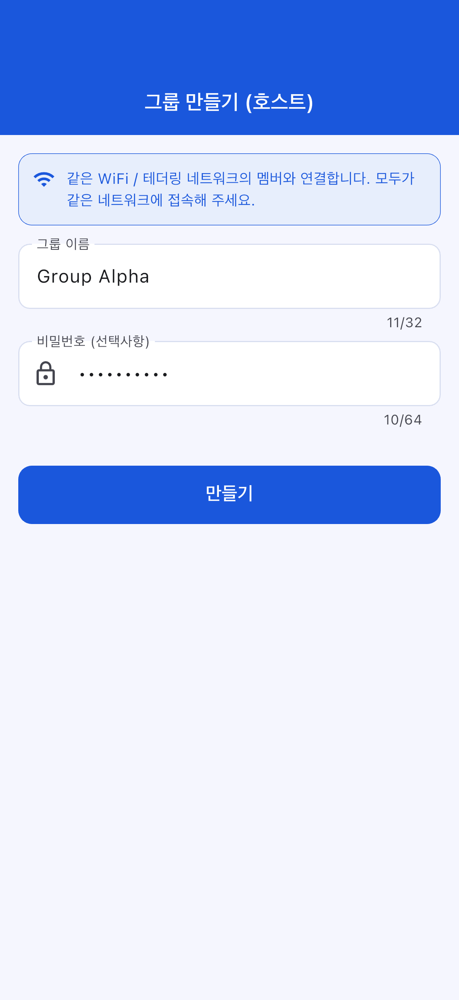
앱 이름: OffLink
대상 사용자: 동일 WiFi 네트워크 내에서 그룹 음성 통화를 하고 싶은 분
작성일: 2026년 3월 9일
최종 업데이트: 2026년 4월 11일
OffLink는 동일 WiFi / 테더링 환경 내에서 인터넷 없이 그룹 음성 통화가 가능한 앱입니다. WebRTC 기반 P2P 통신으로 저지연 음성 통화를 실현합니다.
활용 예시:
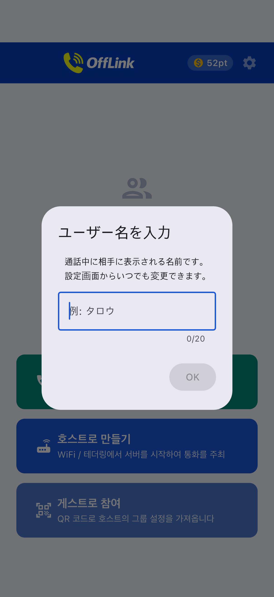
앱 실행 직후의 홈 화면입니다. 하단의 3개 버튼으로 작업을 시작합니다.
OffLink는 WiFi LAN 모드로 동작합니다. 모든 참가자가 동일한 WiFi 네트워크(집 WiFi, 모바일 테더링, 포켓 WiFi 등)에 연결된 상태에서, 호스트 단말이 시그널링 서버를 시작하고 동일 네트워크 내 단말 간 음성 통화를 수행합니다.
핵심 포인트: 인터넷 연결이 필요 없습니다. 라우터나 테더링 단말이 전파를 송출하고 있으면 통화가 가능합니다.
| 역할 | 지원 디바이스 | 설명 |
|---|---|---|
| 호스트 (통화 주최자) | Android / iPhone | 시그널링 서버를 시작하여 통화를 관리하는 단말 |
| 게스트 (참가자) | Android / iPhone | 호스트가 생성한 통화에 참가하는 단말 |
주의: 모든 참가자가 동일한 WiFi 네트워크에 연결되어 있어야 합니다.
앱의 첫 실행 시 아래의 권한을 일괄적으로 요청합니다. 모두 "허용"하지 않으면 일부 기능이 작동하지 않습니다.
| 권한 | 용도 | 거부 시 영향 |
|---|---|---|
| 마이크 | 음성 통화 | 통화 불가 |
| 카메라 | QR 코드 스캔 | QR로 그룹 등록 불가 |
| 근처 디바이스 (WiFi) ※Android | WiFi 네트워크 감지·호스트 탐색 | 호스트 감지 불가 |
| 위치 정보 ※Android | WiFi 스캔 (Android OS 요구사항) | WiFi SSID 가져오기 불가 |
| Bluetooth ※Android | Bluetooth 헤드셋 연동 | 헤드셋 사용 불가 |
| 알림 ※Android | 통화 초대 알림 | 백그라운드 상태에서 알림 수신 불가 |
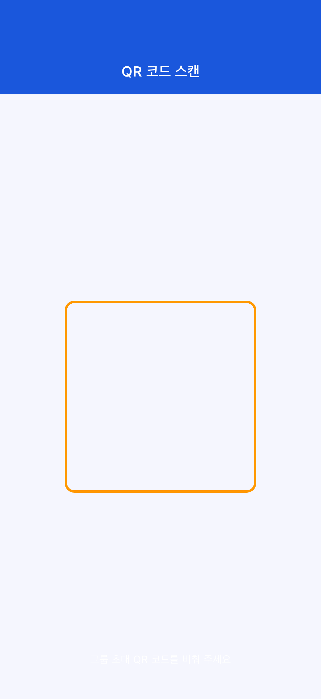
권한을 실수로 거부한 경우:
앱이 설정 화면으로의 안내 대화상자를 표시합니다. 단말기의 설정 → 앱 → OffLink에서 권한을 변경해 주세요.
(집 WiFi, 테더링, 포켓 WiFi 등)
사전에 그룹을 생성하지 않고, 같은 WiFi에 연결된 멤버와 바로 통화를 시작할 수 있습니다.
Step 1: 모든 참가자가 동일한 WiFi 네트워크에 접속합니다.
Step 2: 홈 화면의 "바로 통화" (초록색 버튼)를 탭합니다.
Step 3: 사용자 이름 입력 대화상자가 표시됩니다. 통화 중 다른 멤버에게 보일 이름을 입력합니다.
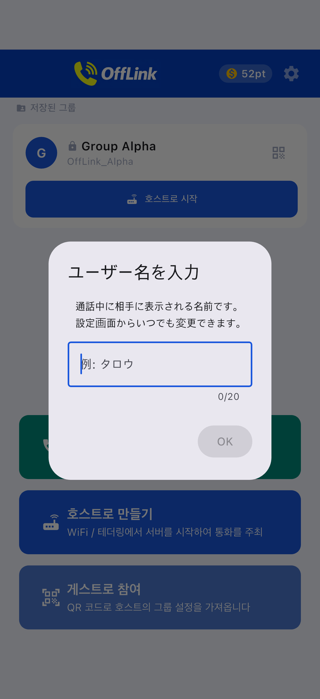
Step 4: 포인트 소비 화면에서 티어를 선택하고 통화를 시작합니다 (→ 3-5. 포인트 시스템 참조).
Step 5: 동일 WiFi 네트워크 내의 다른 멤버에게 통화 초대가 자동으로 알림됩니다. 멤버가 참가하면 통화가 시작됩니다.
기존 호스트가 있는 경우:
같은 네트워크 내에 이미 호스트가 있으면, 기존 통화에 참가하거나 새로운 통화를 시작할지 선택할 수 있습니다.
반복적으로 같은 멤버와 통화하는 경우, 그룹을 만들어 저장해 두면 편리합니다.
Step 1: 홈 화면의 "호스트로 생성" (파란색 버튼)을 탭합니다.
Step 2: 그룹 생성 화면에서 그룹 이름과 비밀번호(선택 사항)를 입력하고 "생성"을 탭합니다.

Tips:
- 그룹 이름은 멤버가 알아보기 쉬운 이름으로 설정하세요 (예:투어링 A조,창고 연락)
- 비밀번호를 설정하면 모르는 사람이 참가할 수 없습니다 (권장)
Step 3: 생성 후 액션을 선택합니다. 바텀시트가 표시됩니다.
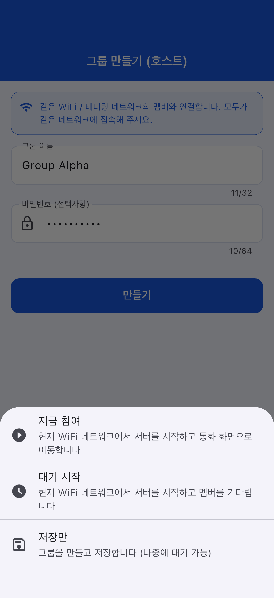
| 액션 | 설명 |
|---|---|
| 바로 참가 | WiFi LAN에서 서버를 시작하고 즉시 통화 화면으로 이동 |
| 대기 시작 | 서버를 시작하고 멤버 접속을 대기 |
| 저장만 | 그룹 정보만 저장 (나중에 시작 가능) |
멤버(게스트)는 호스트로부터 그룹 정보를 받아 참가 등록합니다.
Step 1: 홈 화면의 "게스트로 참가" (하늘색 버튼)를 탭합니다.
Step 2: 참가 방법을 선택합니다. 3가지 방법이 있습니다.
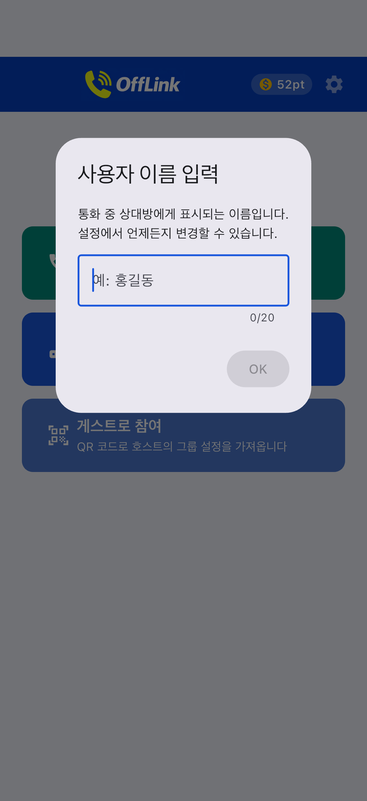
| 방법 | 조작 |
|---|---|
| 📱 QR 코드 스캔 | 호스트가 표시한 QR 코드를 카메라로 읽기 (가장 간편) |
| 📋 코드 붙여넣기 | 호스트가 LINE 등으로 공유한 코드를 붙여넣기 |
| ✏️ 수동 입력 | 그룹 이름·SSID·비밀번호를 직접 입력 |
QR 코드로 그룹 공유 (호스트 측):
호스트는 홈 화면의 그룹 카드 오른쪽에 있는 QR 아이콘을 탭하여 QR 코드를 표시할 수 있습니다.

다른 멤버는 OffLink의 "QR 스캔"으로 읽을 수 있습니다.
코드 붙여넣기로 참가 (게스트 측):
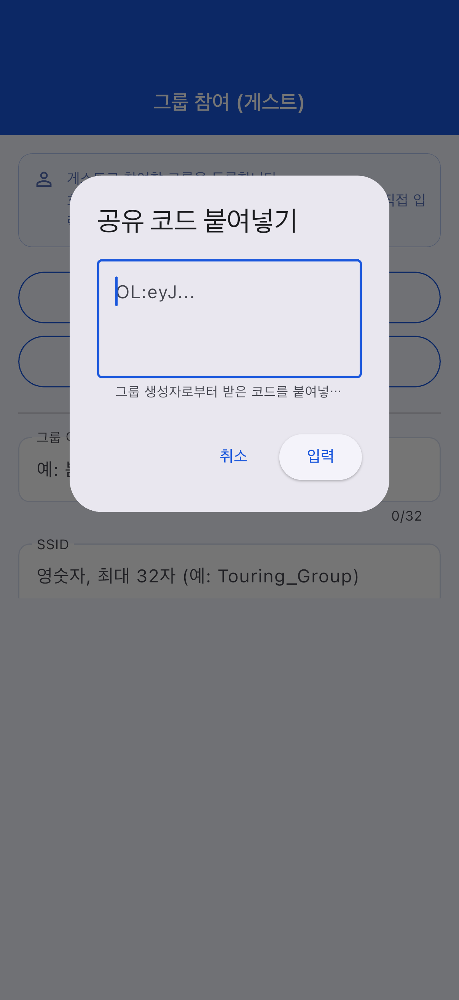
Step 3: 그룹 정보가 자동 입력되면 "등록"을 탭합니다.
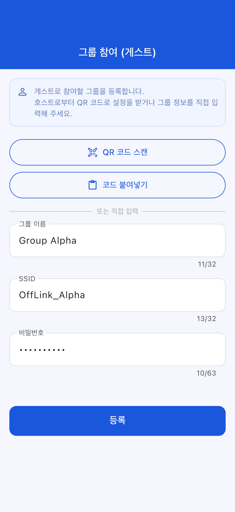
한 번 생성하거나 등록한 그룹은 홈 화면에 저장됩니다.
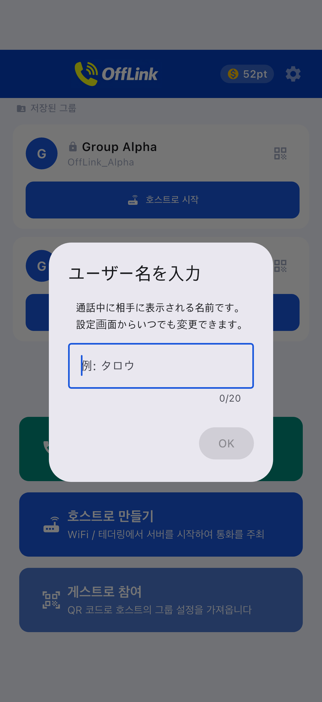
게스트 측 참가 화면:
사용자 이름을 입력하고 참가할 그룹을 선택합니다.
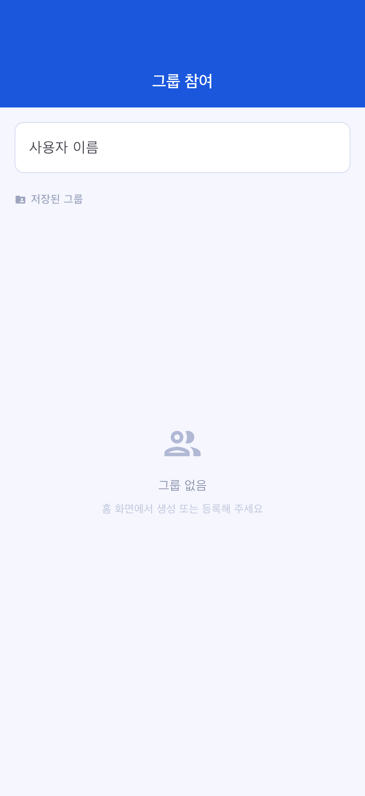
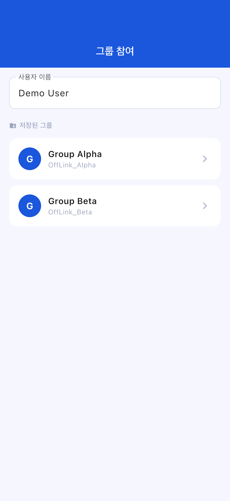
대기 화면:
호스트가 서버를 시작하면 대기 화면에 접속 대기 상태가 표시됩니다.
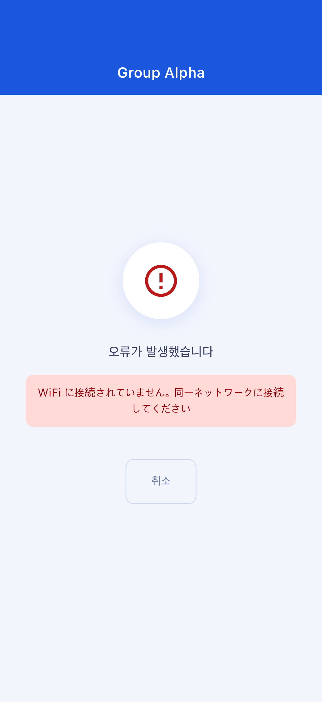
통화 화면:
연결이 완료되면 자동으로 통화 화면으로 전환됩니다.
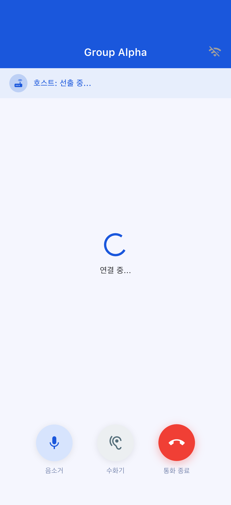
통화 화면 조작:
| 버튼 | 기능 |
|---|---|
| 🎤 음소거 | 자신의 마이크 켜기/끄기 전환 |
| 🔊 음성 출력 전환 | 스피커 / Bluetooth / 이어피스 전환 |
| 🔴 통화 종료 | 통화에서 나가기 |
통화를 시작하려면 포인트가 필요합니다. 포인트는 리워드 광고 시청으로 획득할 수 있습니다.
| 티어 | 소비 포인트 | 최대 참가 인원 |
|---|---|---|
| Standard | 10 pt | 4명 |
| Large | 20 pt | 10명 |
포인트가 부족한 경우: 리워드 광고를 시청하면 10pt를 획득할 수 있습니다. 화면에 표시되는 광고 시청 버튼을 탭해 주세요.
확인 사항:
현재 버전에서는 핫스팟(WiFi 테더링)을 OffLink 내에서 자동으로 시작하는 기능은 없습니다. 대신 테더링을 사용하려면 Android 단말기의 설정 앱에서 수동으로 테더링을 켜고, 모든 참가자가 해당 네트워크에 접속해 주세요.
확인 사항:
확인 사항:
앱이 설정 화면으로의 안내 대화상자를 표시합니다. 단말기의 설정 → 앱 → OffLink → 권한에서 필요한 권한을 "허용"으로 변경해 주세요.
| 항목 | 제한 내용 |
|---|---|
| 최대 참가 인원 | Standard: 4명 / Large: 10명 |
| 통화 방식 | 동일 WiFi 네트워크(WiFi LAN) 내에서만 가능 |
| 백그라운드 동작 | 기종·OS 버전에 따라 제한될 수 있습니다 |
| 그룹 저장 상한 | Free 사용자는 5개까지 (Premium은 무제한) |
| 항목 | 권장 사양 |
|---|---|
| Android | Android 5.0 이상 (API 21+) |
| iOS | iOS 13.0 이상 |
| 배터리 잔량 | 80% 이상 권장 (호스트 단말은 배터리 소모가 크므로) |
| 저장 공간 여유 | 100MB 이상 |
| WiFi 환경 | 라우터 / 테더링 / 포켓 WiFi 등 동일 네트워크 접속이 가능한 환경 |